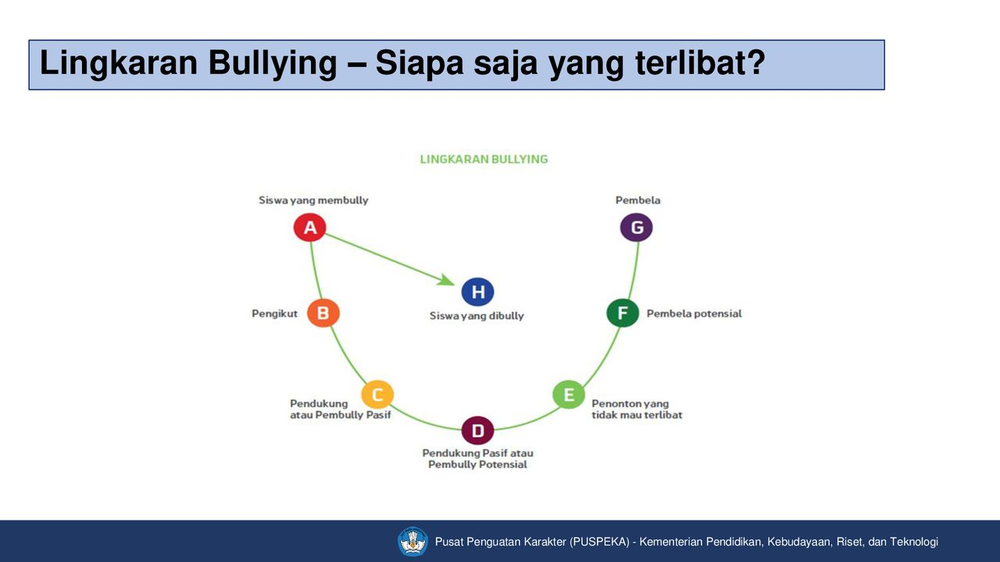
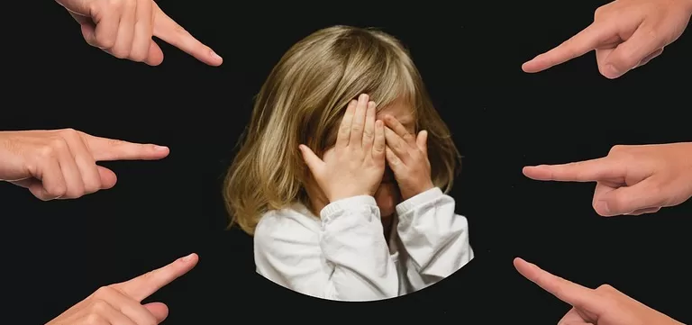

Bullying adalah perilaku agresif yang dilakukan secara sengaja dan berulang-ulang dengan tujuan untuk menyakiti, merendahkan, atau mengintimidasi orang lain. Bullying bisa terjadi dalam berbagai bentuk, seperti fisik (misalnya memukul atau menendang), verbal (seperti menghina atau mengejek), dan sosial (seperti menyebarkan gosip atau mengucilkan seseorang). Tujuan bullying adalah untuk menciptakan ketidaknyamanan atau rasa takut pada korban.
Jenis-jenis bullying lebih rinci meliputi:
Bullying Fisik: Melibatkan kekerasan fisik seperti memukul, menendang, mendorong, atau mencubit korban.
Bullying Verbal: Melibatkan penghinaan, ejekan, atau ancaman lisan.
Bullying Sosial: Berupa tindakan yang bertujuan merusak reputasi atau hubungan sosial seseorang.
Cyberbullying: Dilakukan melalui perangkat digital seperti media sosial atau pesan teks.
Bullying Psikologis (Emosional): Jenis bullying ini lebih fokus pada penyiksaan mental dan emosional korban, seperti memanipulasi perasaan, merendahkan harga diri, atau membuat korban merasa cemas dan tidak aman.
Apa itu Bullying
Definisi: Bullying adalah tindakan agresif yang dilakukan dengan sengaja dan berulang terhadap seseorang untuk menyakiti atau merendahkan korban. Bullying bisa melibatkan kekerasan fisik, penghinaan verbal, pengucilan sosial, atau bahkan ancaman melalui dunia maya (cyberbullying). Tujuan dari bullying adalah menciptakan rasa takut, rendah diri, dan ketidakberdayaan pada korban, serta adanya ketidakseimbangan kekuatan antara pelaku dan korban.
Seorang siswa dipukuli atau ditendang oleh teman sekelasnya di sekolah.
Menyebutkan julukan buruk atau mengejek seseorang dengan kata-kata kasar, misalnya "Dungu" atau "Bodoh."
Mengucilkan seseorang dari kelompok teman, seperti tidak mengundangnya ke acara atau permainan bersama..
Mengirim pesan teks, email, atau komentar di media sosial yang menyakitkan atau menghina.
Mengintimidasi atau mengancam korban secara emosional, seperti mengatakan "Kamu tidak akan pernah berhasil" atau "Tidak ada yang akan peduli padamu."
Siapa yang Terlibat

Pelaku (Bully): Individu yang melakukan tindakan bullying.
Pengikut: Pengikut dalam bullying adalah individu yang mendukung atau ikut serta dalam tindakan bullying, baik secara aktif maupun pasif, seringkali karena tekanan sosial, ketakutan, atau kurangnya pemahaman tentang dampak negatif perilaku tersebut terhadap korban.
Korban: Orang yang menjadi target bullying.
Saksi: Individu yang melihat bullying terjadi.
Pihak Otoritas (Guru, Orang Tua, Atasan) Mereka yang memiliki tanggung jawab untuk memastikan lingkungan yang aman dan bebas dari bullying, seperti guru di sekolah, orang tua di rumah, atau atasan di tempat kerja.
Kapan dan Dimana Biasanya Bullying Terjadi

Bullying dapat terjadi dalam berbagai situasi, seperti:
Sekolah: Di ruang kelas, halaman sekolah, atau fasilitas umum lainnya.
Lingkungan kerja: Intimidasi oleh rekan kerja atau atasan yang memengaruhi produktivitas dan kesehatan mental korban.
Komunitas: Di area publik atau kegiatan komunitas seperti klub olahraga.
Di Dunia Maya (Cyberbullying): Bullying ini terjadi melalui media sosial, aplikasi pesan instan, atau forum online.
Di Rumah: bullying juga bisa terjadi di rumah, baik antara anggota keluarga, atau dalam hubungan antara anak dan orang tua
Mengapa Bullying Bisa Terjadi
Perbedaan Kekuasaan dan Dominasi
Kebutuhan untuk merasa superior: Ketidakmampuan pelaku memahami dampak tindakan mereka pada korban.
Ketidakseimbangan kekuatan: Bullying sering terjadi ketika ada perbedaan kekuatan antara pelaku dan korban, baik secara fisik, sosial, atau emosional. Pelaku mungkin merasa bisa mengontrol korban karena merasa memiliki kekuatan atau posisi yang lebih tinggi.
Pengaruh Lingkungan Sosial
Pengaruh teman sebaya (peer pressure)Banyak kasus bullying terjadi karena pelaku ingin diterima dalam kelompok sosial mereka. Tekanan teman-teman atau kelompok tertentu sering kali mendorong individu untuk melakukan tindakan bullying agar dianggap keren atau dihormati.
Lingkungan yang tidak mendukung:Jika lingkungan, baik di rumah, sekolah, atau tempat kerja, tidak mendukung perilaku yang positif dan saling menghormati, hal ini bisa memperburuk terjadinya bullying
Kurangnya Pengawasan atau Tindakan Tegas
Kurangnya pengawasan dari orang dewasa: Bullying sering kali terjadi di tempat yang tidak terpantau, seperti di luar kelas, di toilet, atau di area yang sepi.
Kurangnya kebijakan anti-bullying:Di banyak tempat, terutama sekolah atau tempat kerja, jika tidak ada aturan yang jelas dan tindakan tegas terhadap bullying, hal ini bisa membuat pelaku merasa bahwa tindakan mereka tidak akan mendapat konsekuensi.
Rasa Ketidakamanan dan Ketidakpastian
Kebutuhan untuk mengalihkan rasa cemas atau ketidakamanan
Masalah emosional atau keluarga
Norma Sosial dan Budaya
Kurangnya Empati dan Pendidikan Sosial
Akses ke Media Sosial dan Teknologi
Dampak Bullying
Dampak Emosional dan Psikologis:
Kecemasan dan Depresi: Korban bullying sering mengalami kecemasan, stres, dan depresi. Mereka mungkin merasa takut atau tidak aman setiap kali berada di sekitar pelaku atau di lingkungan yang sama dengan tempat bullying terjadi.
Rasa Rendah Diri dan Malu: Korban bullying cenderung merasa terhina, merendahkan diri, dan mungkin mulai merasa tidak berharga. Mereka bisa merasa tidak layak dicintai atau dihargai oleh orang lain.
Gangguan Tidur Banyak korban bullying mengalami kesulitan tidur, seperti insomnia atau mimpi buruk, karena stres dan kecemasan.
Pikiran untuk Bunuh Diri Dalam kasus yang sangat parah, bullying bisa menyebabkan korban merasa putus asa, yang dapat meningkatkan risiko depresi berat dan bahkan pikiran atau percobaan bunuh diri.
Dampak Fisik:
Cedera Fisik Bullying fisik bisa mengakibatkan luka fisik seperti memar, goresan, patah tulang, atau cedera lainnya. Beberapa korban juga dapat mengalami masalah kesehatan kronis akibat stres.
Masalah Kesehatan Jangka Panjang: Stres dan trauma yang dialami korban bullying bisa berdampak pada kesehatan tubuh mereka dalam jangka panjang, misalnya gangguan pencernaan atau penyakit jantung.
Dampak Sosial:
Isolasi Sosial: Korban bullying sering kali diisolasi atau dijauhi oleh teman-teman mereka, baik di sekolah maupun di tempat lain. Ini membuat mereka merasa kesepian dan terpinggirkan.
Kesulitan dala Membina Hubungan: Karena trauma yang dialami, korban bullying bisa mengalami kesulitan dalam membina hubungan sosial yang sehat di masa depan.
Dampak Akademis dan Profesional
Penurunan Prestasi Akademik: Stres dan kecemasan yang dialami oleh korban bullying dapat memengaruhi konsentrasi dan motivasi mereka di sekolah. Hal ini dapat berujung pada penurunan nilai dan prestasi akademik.
Absen dari Sekolah atau Tempat KerjaBanyak korban bullying memilih untuk absen dari sekolah atau tempat kerja karena takut atau cemas menghadapi pelaku.
Cara Mencegah dan Mengatasi Bullying
>
Menegakkan Kebijakan Anti-Bullying: Menerapkan kebijakan tegas yang melarang bullying dan memberikan sanksi yang sesuai.
Menyediakan pendidikan tentang pentingnya empati dan toleransi di sekolah
Membangun Lingkungan yang Mendukung: Menciptakan lingkungan yang inklusif dan aman bagi setiap individu.
Menegakkan Kebijakan Anti-Bullying: Menerapkan kebijakan tegas yang melarang bullying dan memberikan sanksi yang sesuai.
Memberikan Dukungan kepada Korban: Menyediakan dukungan emosional dan saluran pelaporan yang aman bagi korban.
Meningkatkan Keterampilan Sosial dan Komunikasi: Mengajarkan keterampilan untuk berinteraksi secara positif dan mengatasi konflik.
Mengurangi Penyebab yang Mendorong Bullying: Mengatasi ketidakseimbangan kekuatan dan meningkatkan keadilan sosial.
Mengatasi Cyberbullying: Mendidik tentang perilaku online yang sehat dan memantau penggunaan media sosial.
Dukungan dari Pihak Berwenang: Melibatkan pihak berwenang untuk menangani kasus bullying yang serius.
Menciptakan Program Intervensi Positif: Memberikan pelatihan untuk membantu pelaku bullying mengubah perilaku mereka.
Tindakan yang Dapat Diambil Jika Menjadi Korban Bullying
Laporkan: Beritahu orang dewasa yang dapat membantu, seperti guru, orang tua, atau konselor.
Laporkan Kepada Otoritas
Beritahu guru, orang tua, atau konselor untuk mendapatkan bantuan.
Jaga Jarak dari Pelaku
Cobalah untuk menghindari kontak langsung dengan pelaku bullying untuk mengurangi risiko lebih lanjut.
Bicarakan dengan Seseorang yang Dipercaya:
Ceritakan masalah Anda kepada teman, keluarga, atau seseorang yang dapat memberikan dukungan emosional.
Jaga Kesehatan Mental: Carilah dukungan psikologis untuk mengatasi dampak emosional akibat bullying.
Gunakan Teknologi untuk Melaporkan Cyberbullying:Laporkan pesan atau aktivitas bullying di media sosial ke platform terkait untuk mendapatkan perlindungan.
Ciptakan rencana Keamanan Rencanakan langkah-langkah untuk menjaga diri Anda tetap aman dalam situasi bullying.
Kesimpulan
Bullying adalah tindakan yang merusak, baik secara fisik maupun emosional, dan dapat memengaruhi korban dalam berbagai aspek kehidupan mereka. Setiap orang berperan dalam menciptakan lingkungan yang bebas dari bullying, baik dengan mendukung korban, menghentikan perilaku bullying, dan memastikan adanya kebijakan yang tegas terhadap tindakan tersebut. Dengan edukasi, empati, dan kesadaran bersama, kita dapat membangun masyarakat yang lebih aman, inklusif, dan saling menghargai, sehingga bullying dapat diminimalisir dan korban dapat mendapatkan dukungan yang mereka butuhkan.